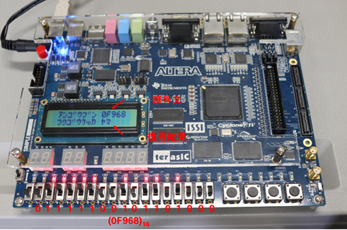

実習5 RSA 暗号処理回路の実装
ここでは、講義7で説明した暗号理論を実際に体験するプログラムを作成します。プログラムの大部分は三浦先生が作成しており、私たちが記述するのは Multiplication_9bit のみです。まず、簡単にプログラムの構成を説明します。
8ビット(1文字)と16ビット(2文字)の暗号化を行いますが、その方法には単純実装とバイナリ法の2種類があります。
単純実装
講義7で説明したように、手計算で余りを求める方法です。式は、(M^E mod N) → Cとなります。
例えば、平文 M=3、E=3、N=2 の場合、暗号文がどうなるかを考えましょう。
- まず、3を3乗します:3×3×3=27。
- 次に、27÷2=13 余り1。この場合、暗号文は1になります。
べき乗を求める方法
まず、べき乗演算モジュールで平文 M を E-1 回掛けます。
- 平文 M=3、E=3 の場合、3の3乗は次のようになります:
- 1回目:3×3=9
- 2回目:9×3=27
これくらいなら良いのですが、Eの値が大きくなると計算に時間がかかります。8ビットの場合は影響が少ないですが、16 ビットの単純実装では計算に時間がかかるため、 プログラムを実行してもセグメントに結果がすぐ表示されません。そのため、毎年プログラムが失敗したと思う方が多いですが、 処理に時間がかかっているだけなので焦らず待つようにしてください。
剰余を求める方法
剰余は剰余乗算モジュールで計算します。
- 1回目の掛け算:3×3=9
- 2回目の掛け算:9×3=27
掛け算が終了したら、割り算ではなく引き算で余りを求めます。引き算を続け、2より小さくなるまで繰り返します。
- 27-2-2527 - 2 = 2527-2=25
- 25-2-2325 - 2 = 2325-2-23
- 3-2-13-2 = 13-2=1
このようにして、余りが1と分かります。ここで商(13)は必要なく、余りの1さえわかれば良いです。
バイナリ法
バイナリ法では(M^E mod N→C)の計算を高速化します。
例えば、平文 M=3、E=3、N=2 の場合、E=3 を2進数に変換すると 101 になります。これを使って計算の高速化を行います。
バイナリ法の手順
1. べき乗の指数を2進数に変換
- 計算するべき乗の指数(E)を2進数に変換します。例えば、E=3 なら、2進数にすると 101 になります。
2. 各ビットの値に応じた計算
- この2進数の各ビットに基づいて、べき乗を計算します。
3. 掛け算の結果に剰余を求める
- 割り算は使わずに、引き算を繰り返して剰余を求めます。
基本的なべき乗計算
ビットが「0」の場合と「1」の場合で計算が変わります。
- ビットが「0」の場合:
Y=(Y×Y)mod N
つまり、前の結果を自分自身と掛け算してから、剰余を求めます。 - ビットが「1」の場合:
Y=(Y×Y)mod N の後に、さらに
Y=(Y×b)mod N
を計算します。
例
次に、3の5乗(3^5)をバイナリ法で計算します。
- E=5 は 2進数で 101 になります。
- 初期値として Y=1 から計算を始めます。
- 1. ビットが「1」なので、
Y=1×3=3 - 2. 次のビットが「0」なので、
Y=3×3=9 - 3. 最後のビットが「1」なので、
Y=9×9=81
Y=81×3=243
結果として、3^5=243 となります。
高速化のポイント
バイナリ法では、すべてのビットを使って一気に計算します。単純なべき乗計算のように指数分だけ順番に掛け算するのではなく、掛け算の回数を減らして計算できるため、 大きな数のべき乗計算が効率良く行えるのです。
指数が大きくなればなるほど、この高速化の効果が顕著に現れます。
例えば、3の100乗を普通の方法で計算すると、99回の掛け算が必要ですが、バイナリ法だと掛け算の回数は9回になります。
単純実装とバイナリ法については、知識として理解しておく程度で十分です。特に、単純実装は時間がかかることを覚えておいてください。
実習プログラムの確認
実習で最も簡単な 8bit RSA 暗号化のプログラムを確認していきます。
- RSA_Encryption_Simpleのファイルを開きます。
TOP モジュールは RSA_Encryption_Simple_8bitです。
図の+部分をクリックします
実習で使用するのは図のMultiplication_9bitです。このファイルをクリックすると右のようにプログラムがでます。
この always から end までの部分を編集して完成させます。
実習の進め方
実習では、剰余乗算モジュールの動作記述を行います。まずは基本的な考え方を説明します。
- S0 (初期化): リセットボタンが押されたとき、すべてのレジスタ信号を0にします。対象の信号は以下です:
- isMult(掛け算をするかどうかの信号、0で計算、1で終了)
- endflag(剰余算終了の信号、1で計算終了)
- out(出力される余り)
- mult_tmp(掛け算の結果が入る場所)
- S1 (乗算): リセットされていない場合、掛け算を実行します。掛け算されるのは、べき乗演算モジュールで計算されたaとbの値で、結果は mult_tmp に入ります。
- S2 (剰余算): 掛け算の結果から余りを求めます。割り算ではなく、引き算で余りを計算します。
- S3 (出力): 剰余が求められたら、計算を終了し、その結果を出力します。
8bitプログラムと16bitプログラムのヒントと解答はこちら
8bit RSA の暗号化と復号の動作
暗号化の流れ:
メッセージをスライドスイッチで入力すると、LCD に暗号文が表示されます。
例:「ヤ」という文字を入力すると、それが暗号化され、(D4)16のような暗号文が表示されます。
復号の流れ:
スライドスイッチで暗号文を入力し、LCD に元のメッセージが表示されます。
例:暗号文(119)16 を入力すると、「ヤ」という元のメッセージが復号されて表示されます。

この手順で、1文字(8bit)のメッセージを暗号化・復号することができます。
6. 16bit RSA の暗号化と復号の動作
16bit RSAでは、2文字のメッセージを暗号化・復号することが可能です。
暗号化の流れ:
2文字のメッセージをスライドスイッチで入力し、暗号化を実行します。
例:「ヤマ」を入力すると、(D4CF)16のような暗号文が表示されます。
復号の流れ:
暗号文を入力すると、元の2文字のメッセージが LCD に表示されます。
例:暗号文(0F968)16を入力すると、「ヤマ」という元のメッセージが復号されて表示されます。
テキストの16進数から2進数への変換
テキストの「ヤ」は LCD 文字テーブルに基づき、16進数では「D4」となります。しかし、ボードに入力するのは2進数ですので、16進数を2進数に変換する必要があります。16進数を2進数に変換する方法としては、各桁の16進数を4ビットの2進数に分解し、それを結合するのが最も簡単でわかりやすいです。16進数の1桁は、ちょうど4ビットの2進数で表せるため、各桁を対応する2進数に変換します。
手順
1. 16進数の「D4」をそれぞれ分解します。
- D(16進数)→10進数「13」
- 4(16進数)→10進数「4」
2. 各桁を4ビットの2進数に変換します。
- D (13) の2進数 → 1101
- 4(4) の2進数→0100
3. 結合して2進数を完成させます。
- 「D4」 → 「1101 0100」
16進数「D4」を2進数に変換すると「11010100」となります。
参考: 16進数から2進数への対応表
| 16進数 | 2進数 |
|---|---|
| 0 | 0000 |
| 1 | 0001 |
| 2 | 0010 |
| 3 | 0011 |
| 4 | 0100 |
| 5 | 0101 |
| 6 | 0110 |
| 7 | 0111 |
| 8 | 1000 |
| 9 | 1001 |
| A | 1010 |
| B | 1011 |
| C | 1100 |
| D | 1101 |
| E | 1110 |
| F | 1111 |
この方法を使うと、簡単に16進数を2進数に変換できます。
LCD 文字テーブルのカタカナ部分
| 文字 | 16進数 | 2進数 |
|---|---|---|
| ア | B1 | 10110001 |
| イ | B2 | 10110010 |
| ウ | B3 | 10110011 |
| エ | B4 | 10110100 |
| オ | B5 | 10110101 |
| カ | B6 | 10110110 |
| キ | B7 | 10110111 |
| ク | B8 | 10111000 |
| ケ | B9 | 10111001 |
| コ | BA | 10111010 |
| サ | BB | 10111011 |
| シ | BC | 10111100 |
| ス | BD | 10111101 |
| セ | BE | 10111110 |
| ソ | BF | 10111111 |
| タ | C0 | 11000000 |
| チ | C1 | 11000001 |
| ツ | C2 | 11000010 |
| テ | C3 | 11000011 |
| ト | C4 | 11000100 |
| ナ | C5 | 11000101 |
| ニ | C6 | 11000110 |
| ヌ | C7 | 11000111 |
| ネ | C8 | 11001000 |
| ノ | C9 | 11001001 |
| ハ | CA | 11001010 |
| ヒ | CB | 11001011 |
| フ | CC | 11001100 |
| ヘ | CD | 11001101 |
| ホ | CE | 11001110 |
| マ | CF | 11001111 |
| ミ | D0 | 11010000 |
| ム | D1 | 11010001 |
| メ | D2 | 11010010 |
| モ | D3 | 11010011 |
| ヤ | D4 | 11010100 |
| ユ | D5 | 11010101 |
| ヨ | D6 | 11010110 |
| ラ | D7 | 11010111 |
| リ | D8 | 11011000 |
| ル | D9 | 11011001 |
| レ | DA | 11011010 |
| ロ | DB | 11011011 |
| ワ | DC | 11011100 |
| ン | DD | 11011101 |